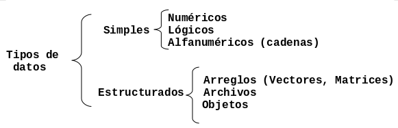
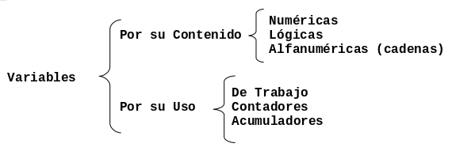

Entidades Primitivas
En este capítulo aprenderás sobre los elementos básicos para diseñar algoritmos, como son:
- los tipos de datos,
- los identificadores,
- las constantes,
- las variables
- y las expresiones.
Tipos de Datos
Todos los datos en un algoritmo o programa tienen un tipo asociado con ellos. Un dato puede ser un
simple caracter, tal como 'b', o un valor entero tal como 35.
El tipo determina el conjunto de valores que puede tomar un dato y el tipo de operaciones que se le pueden aplicar. La siguiente Figura muestra la clasificación general de los tipos de datos de acuerdo a su complejidad.

Algunos tipos de datos estructurados se analizarán en capítulos posteriores, este Capítulo se enfoca en describir los tipos de datos simples.
Tipos de Datos Simples
A continuación se detalla el tipo de contenido que corresponde a los tipos de datos simples.
- Datos Numéricos. Permiten representar valores de forma numérica, esto incluye a los números enteros y los reales. Con este tipo de datos se pueden realizar las operaciones aritméticas comunes.
- Datos Alfanuméricos (Cadenas). Estos datos son una secuencia de caracteres alfanuméricos,
en otras palabras texto. Esto incluye nombres de personas, direcciones, etc. Es posible
representar números como alfanuméricos, pero éstos pierden sus propiedades matemáticas, es
decir, no es posible hacer operaciones aritméticas con datos alfanuméricos. Este tipo de datos
se representan encerrados entre comillas. Por ejemplo:
"Grupo de Usuarios PHP Puebla","1997". - Datos Lógicos. Son aquellos que sólo pueden tener dos valores: cierto o falso ya que representan el resultado de una comparación entre otros datos (numéricos o alfanuméricos).
Identificadores
Los identificadores representan los datos de un programa. Un identificador es una secuencia de caracteres que sirve para identificar un dato en la computadora.
Ejemplos: nombre, numeroDeHoras, calificacion2
Reglas para formar un identificador
Los identificadores deben seguir las siguientes reglas:
- Deben comenzar con una letra (A a Z, mayúsculas o minúsculas) y no deben contener espacios en blanco.
- Letras, dígitos y el guión bajo (
_) están permitidos después del primer caracter.
Constantes y Variables
Los identificadores sirven para nombrar los dos tipos de elementos más importantes y más usados en un programa o algoritmo, las constantes y las variables.
- Constante
Una constante es un dato numérico o alfanumérico cuyo valor no cambia dentro de un algoritmo o durante la ejecución de un programa.
Por ejemplo:
PI = 3.1416- Variable
Es es un valor numérico o alfanumérico cuyo contenido puede cambiar durante la ejecución de un programa o algoritmo.
Por ejemplo:
perimetro = PI * diametroLas variables son :
diametroyperimetro, la constante esPI.
Notación para Variables y Constantes
Existen varias formas estándar de nombrar variables y constantes, a las cuales se les conoce como notaciones.
Una de las más comunes es la notación Camel, la cual consiste en escribir los identificadores con
la primera letra de cada palabra en mayúsculas y el resto en minúsculas, por ejemplo: EndOfFile.
Se le llama notación "Camel" porque los identificadores semejan las jorobas de un camello.
Existen dos variantes de la notación:
UpperCamelCase: en esta variante la primera letra también es mayúscula.lowerCamelCase: en esta variante la primera letra es minúscula.
En muchos lenguajes de programación, se tiene la costumbre de denotar las constantes mediante
identificadores en mayúsculas. En este caso la notación Camel no es aplicable y solo queda usar la
notación C, por ejemplo: END_OF_FILE, PI, etc.
Clasificación de las Variables
Las variables se clasifican por su contenido en: numéricas, lógicas y alfanuméricas (cadenas); y por su uso en: variables de trabajo, contadores y acumuladores. La siguiente Figura muestra gráficamente esta clasificación.

Por su contenido
- Variable Numéricas. Son aquellas en las cuales se almacenan valores numéricos, positivos o
negativos, es decir almacenan secuencias de dígitos (números del 0 al 9), signos (+ y -) y el
punto decimal. Ejemplo:
salario = 3500.85,costo = 2500,temperatura = -2. - Variables Lógicas. Son aquellas que sólo pueden tener dos valores: verdadero o falso (
VóF), éstos representan el resultado de una comparación entre otros datos (operación relacional). - Variables Alfanuméricas. Variables formadas por caracteres alfanuméricos (letras, números
y caracteres especiales). Por ejemplo:
letra = 'a',apellido = "López",direccion = "Av. Libertad #190".
Por su uso
- Variables de Trabajo. Variables que reciben el resultado de una operación matemática. Por
ejemplo:
suma = a + b / c. - Contadores. Se utilizan para llevar el control del número de ocasiones en que se realiza
una operación. Generalmente este tipo de variable cuenta de uno en uno. Por ejemplo:
contador = 0 contador = contador + 1 contador = contador + 1 contador = contador + 1La variable
contadorcontó 3 veces en este ejemplo. - Acumuladores. Son variables que sirven para llevar la suma acumulativa de una serie de
valores que se van leyendo o calculando progresivamente. Por ejemplo:
deuda = 0 deuda = deuda + 25 deuda = deuda + 5 deuda = deuda + 10En este caso la variable
deudaacumula la cantidad que se debe a alguien y su valor final es 40.
Ejercicios propuestos
- ¿Cuál es la clasificación de los tipos de datos de acuerdo a su complejidad?
- Describa el tipo de contenido que pueden almacenar los tipos de datos simples.
- ¿Qués un identificador y cuáles son las dos reglas básicas para formar un identificador.
- Defina que es una variable y qué es una constante.
- ¿Cual es la notación que se debe usar para una variable y para una constante? De un ejemplo de cada una.
- ¿Cuál es la clasificación de las variables por su uso y su contenido?